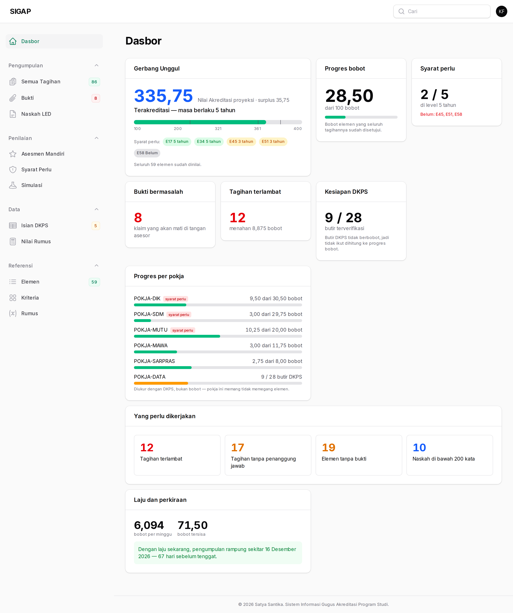
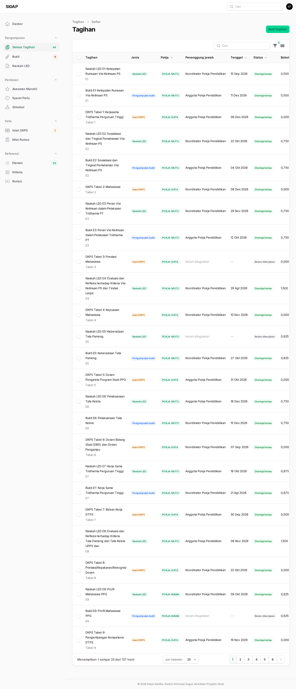
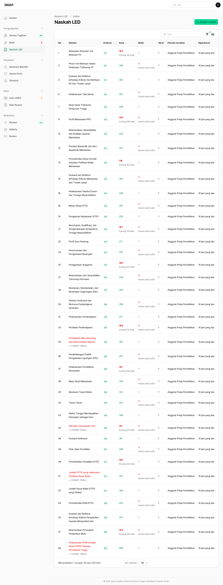
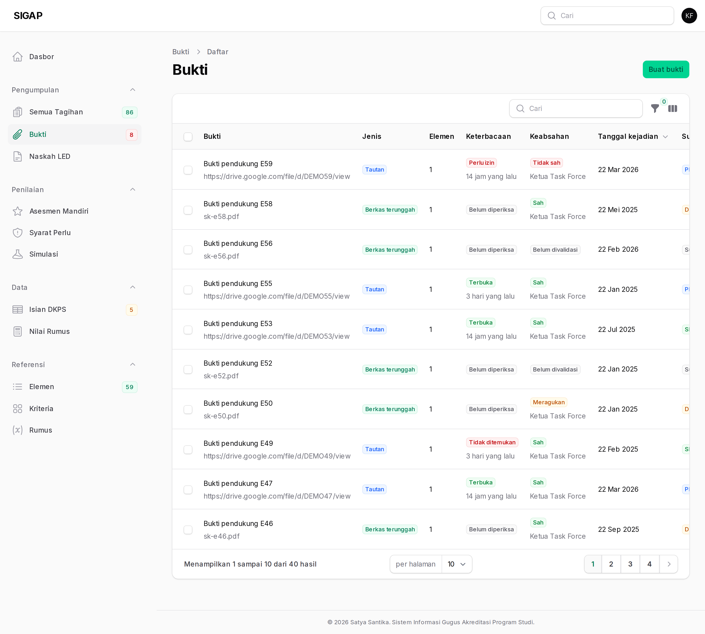
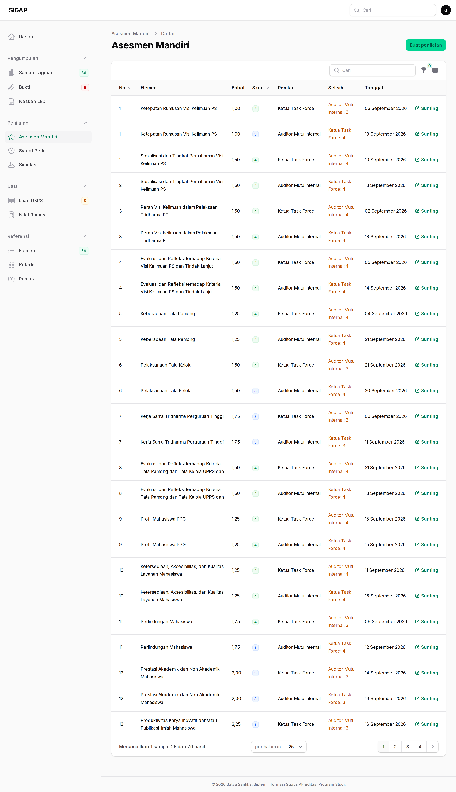
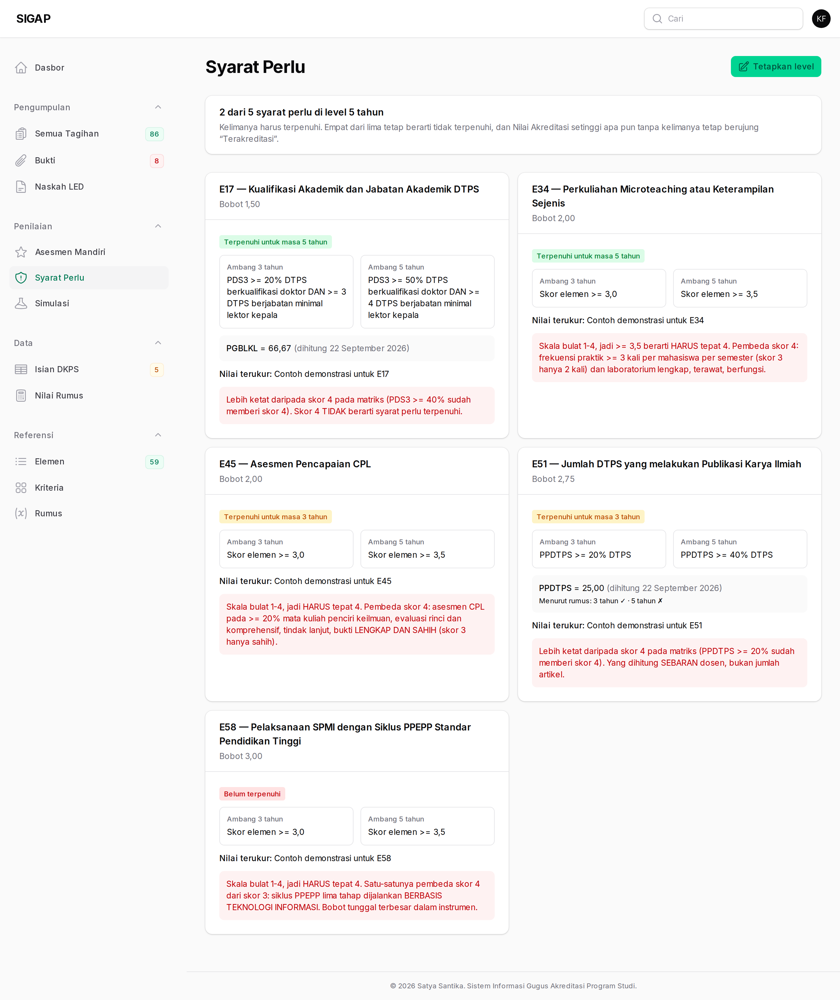
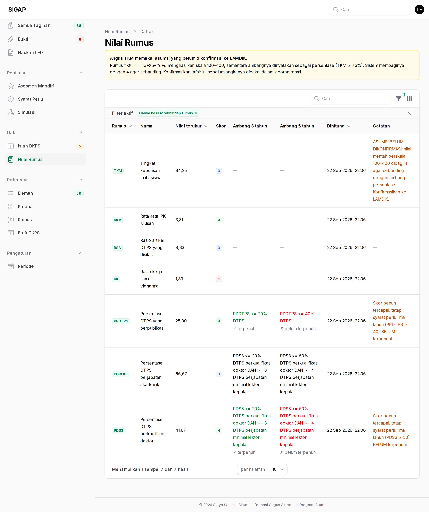
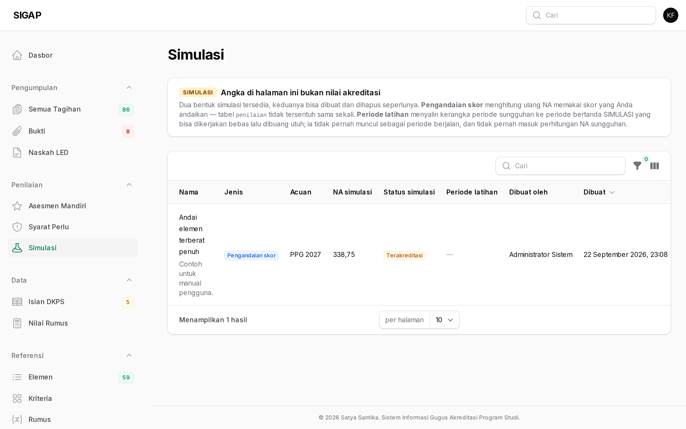

Ketua task force adalah satu-satunya peran yang memegang seluruh wewenang atas isi akreditasi: membuat dan menugaskan tagihan, menyetujui atau mengembalikannya, menulis narasi, memvalidasi bukti, mengisi penilaian, dan menetapkan level syarat perlu.
Yang tidak Anda pegang adalah pengelolaan pengguna. Itu milik admin. Bila Anda butuh akun baru atau peran seseorang diubah, mintalah kepadanya.
Dasbor
Ubin Gerbang Unggul adalah yang paling penting di layar ini, dan letaknya paling atas karena satu alasan: NA tinggi tanpa syarat perlu tetap berujung "Terakreditasi", bukan "Unggul". Progres 90% tidak menghasilkan Unggul bila salah satu dari lima syarat perlu masih merah.
Angka NA proyeksi selalu didampingi kalimat kejujuran: berapa elemen yang belum dinilai dan karenanya diandaikan berskor 3. Bacalah kalimat itu sebelum mengutip angkanya.
Ubin Laju dan perkiraan membaca riwayat tagihan untuk memperkirakan kapan pengumpulan rampung dengan kecepatan sekarang. Perkiraan, bukan janji.

Semua tagihan
137 tagihan membagi habis bobot 100: 59 narasi, 50 bukti, 28 DKPS. Setiap tagihan membawa bobot terkaitnya sendiri, dan jumlah seluruhnya persis 100,000.
Status bergerak lewat satu pintu: belum → dikerjakan → diajukan → direviu → disetujui, dengan dikembalikan sebagai jalan mundur. Setiap perpindahan menulis satu baris riwayat yang tidak pernah ditimpa.
Tagihan tidak bisa disetujui selama masih ada buktinya yang tidak terbuka. Itu pagar yang disengaja — bukti yang tidak terbaca oleh mesin juga tidak akan terbaca oleh asesor.

Naskah LED
Narasi ditulis manusia. Sistem menyediakan angka, bukti, dan kerangka; kalimatnya Anda yang susun.
Setiap penyimpanan membuat versi baru — versi lama tidak pernah hilang dan tidak pernah ditimpa. Anda bisa membandingkan dan kembali ke versi mana pun.

Bukti
Bukti dinilai pada dua sumbu yang terpisah, dan keduanya harus hijau:
- Keterbacaan (
akses_status) — diperiksa mesin. Tautan Drive dibuka tanpa kredensial apa pun, persis seperti asesor akan membukanya. Memeriksanya sambil membawa akun yang punya akses akan membuat pemeriksaan selalu lulus dan karena itu tidak berguna. - Keabsahan (
validasi_status) — dinilai manusia. Tautan bisa terbuka lebar tetapi berisi dokumen yang keliru.
Setiap bukti wajib punya tanggal kejadian dan sumber. Bukti tanpa keduanya ditolak saat disimpan, bukan sekadar diberi peringatan.

Asesmen mandiri
Skor 1–4 per elemen. Kolom Selisih menandai elemen yang dinilai berbeda oleh dua penilai — dan elemen itulah yang paling berguna didiskusikan sebelum asesor datang, karena beda penilaian hampir selalu berarti buktinya belum meyakinkan.

Syarat perlu
Lima syarat perlu, masing-masing berlevel belum, tiga tahun, atau lima tahun. Yang dihitung adalah kelimanya, bukan sebagian: empat dari lima terpenuhi tetap berarti tidak terpenuhi.
Inilah gerbang yang menentukan apakah NA tinggi berubah menjadi "Unggul" atau berhenti di "Terakreditasi".

Nilai rumus
Tujuh rumus LAMDIK — PDS3, PGBLKL, PPDTPS, RK, RSA, TKM, RIPK — dihitung dari isian DKPS. Hasilnya menunjukkan skor sekaligus apakah syarat tiga atau lima tahun terpenuhi; keduanya angka yang berbeda dan ditampilkan terpisah.

Simulasi
Anda bisa membaca hasil simulasi, tetapi membuat dan menghapusnya adalah wewenang admin. Gunakan halaman ini untuk menjawab "apa yang harus naik supaya statusnya berubah" sebelum memutuskan ke mana tenaga pokja diarahkan.
Ingat lencana SIMULASI di bagian atas: angka di halaman ini bukan nilai akreditasi.
